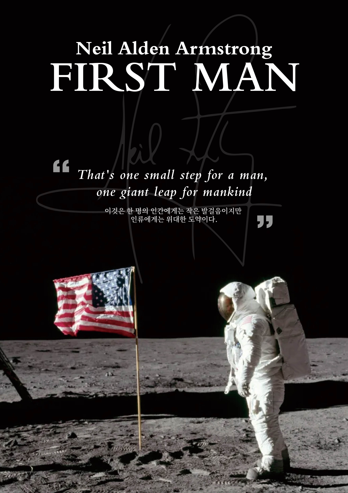
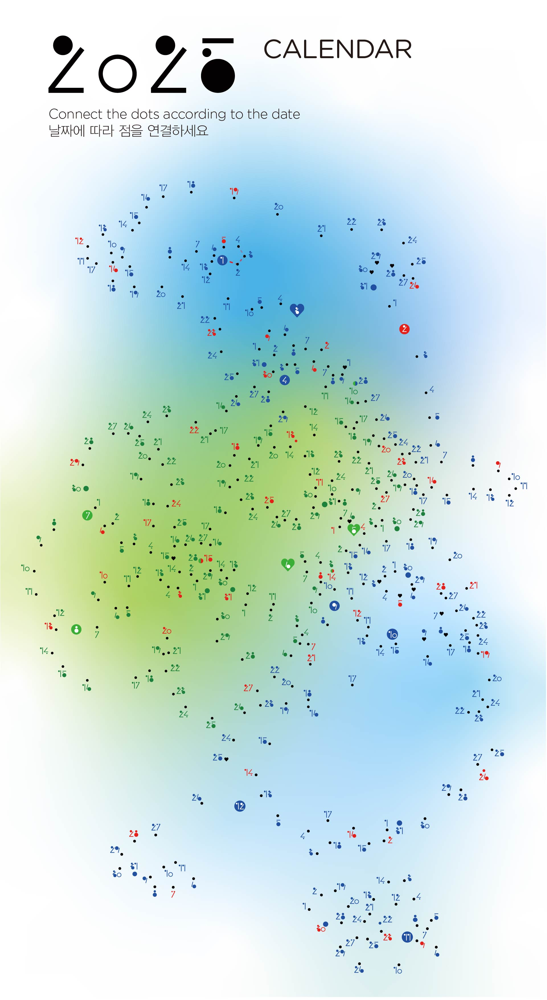

HOME
ABOUT
WORKS
CONTACT
23-1 창백한 푸른 점
디자인학과 내 모꼬지 동아리 활동
우주를 주제로 디자인한 포스터
칼 세이건의 <코스모스>를 콘셉트로 한 디자인 작업

24-1 정보이미지디자인 강의
닐 암스트롱을 주제로 디자인한 인포그래픽 포스터
닐 암스트롱의 수치 정보를 인포그래픽으로 표현한 디자인 작업
24-2 정보디자인 강의
자신만의 방법인 x를 주제로 디자인한 인포그래픽 포스터
'눈 관리법'을 주제로 인포그래픽 포스터 및 리플렛 제작

24-2 타이포그래픽디자인 강의
타이포 활용을 주제로 디자인한 연간캘린더
'점잇기'를 콘셉트로 한 디자인 작업
24-2 타이포그래픽디자인 강의
기존 전시 포스터를 재해석한 포스터 디자인
"파도", "새로운 기회"를 키워드로 한 포스터
24-2 정보디자인 강의
12년 뒤의 미래를 디자인한 포스터
하쿠호도 광고 대행사로 설정하여 디자인